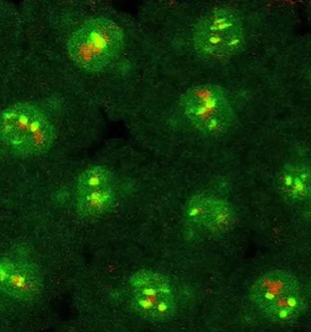

What
Describe the outcomes of mitosis and meiosis in syllabus 0610.
BIOLOGY · SYLLABUS 17.2 + 17.3
Mitosis keeps cells the same. Meiosis makes genetically different gametes.
17.2 Mitosis17.3 Meiosis
Start with mitosisLEARNING OBJECTIVE
Describe the outcomes of mitosis and meiosis in syllabus 0610.
Explain how cell division supports growth, repair and gamete production.
Track chromosome number, study the diagrams and self-check.
STARTER · 1-MINUTE PREDICTION
A skin cell divides to repair tissue. What should each new cell receive?
KEY TERMS · ENGLISH ↔ 繁體中文
20 essential terms from the whole lesson, grouped for quick review.
CAMBRIDGE 0610 · 17.2
Five syllabus points · all Extended (Supplement).

CAMBRIDGE 0610 · 17.3
Two syllabus points · both Extended (Supplement).
PLENARY · EXIT TICKET
Choose A–D for each question to finish your review.